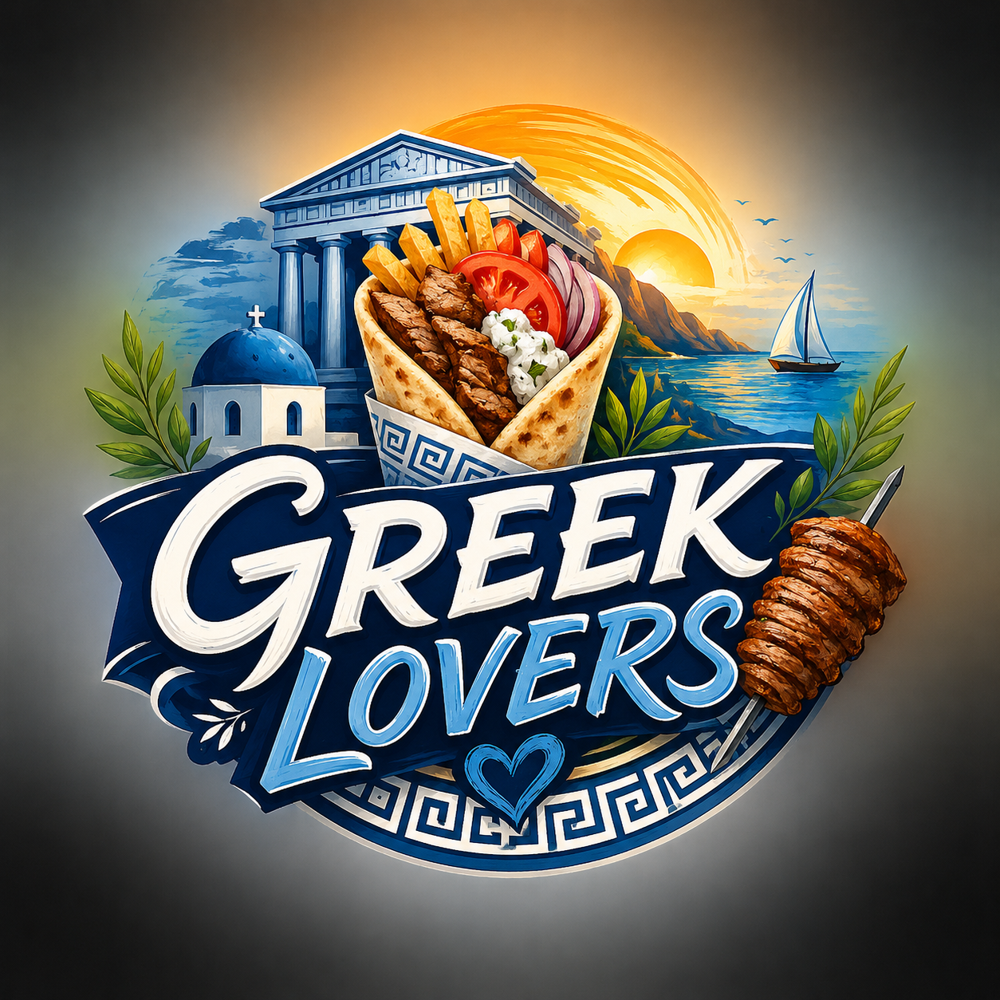

Authentic Greek Flavours, Made with Love
At Greek Lovers, our passion for Greek cuisine inspired us to create a place where tradition meets flavor. Our goal is simple: to serve authentic Greek gyros made with high-quality ingredients and fresh products for everyone who loves great food.
Our story began with a group of friends who wanted to share their favorite Greek flavors with the world. By respecting traditional recipes and focusing on quality, we created Greek Lovers to offer a unique and memorable food experience.
What makes us different is our commitment to fresh ingredients, authentic Greek recipes, fast service, and customer satisfaction. Whether you choose a classic gyros or one of our special creations, our mission is to bring you the taste of Greece in every bite.
Greek Lovers – because great gyros is always made with love!